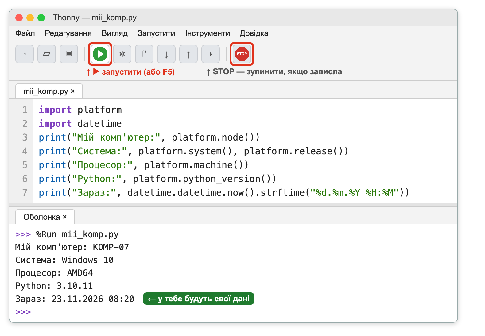

Сьогодні з'ясуємо, що таке цифрове середовище та інформаційні технології, розкладемо речі по «кошиках», розгадаємо, яка технологія допомогла в житті, і змусимо Python розповісти про твій комп'ютер.
Цифрове середовище — це все цифрове навколо нас, де ми вчимося, граємося, спілкуємося і працюємо. Воно складається з трьох частин:
те, що можна взяти в руки: комп'ютер, смартфон, принтер, флешка, навушники
те, що працює всередині пристрою: браузер, Thonny, Scratch, гра, застосунок на телефоні
те, що з'єднує пристрої: Інтернет, Wi-Fi, мобільний зв'язок, Bluetooth
Інформаційні технології (ІТ) — це способи за допомогою пристроїв і програм збирати, зберігати, опрацьовувати і передавати інформацію. Наприклад: навігація в телефоні, відеозв'язок, хмарне сховище для фото, QR-код, онлайн-перекладач, електронна пошта.
Паперовий підручник чи крейда — корисні речі, але не цифрові: у них немає ні програми, ні зв'язку.
Під кожною карткою вибери зі списку: це пристрій, програма, мережа (зв'язок) чи не цифрове. Коли вибереш усі 12 — натисни «Перевірити».
Прочитай історію і вибери технологію, яка в ній працює. Кожна технологія підходить лише до однієї історії.
Комп'ютер — частина цифрового середовища. Python уміє дізнатися про нього все головне. Ось як це зробити:
import platform import datetime print("Мій комп'ютер:", platform.node()) print("Система:", platform.system(), platform.release()) print("Процесор:", platform.machine()) print("Python:", platform.python_version()) print("Зараз:", datetime.datetime.now().strftime("%d.%m.%Y %H:%M"))
mii_komp.py.
| Рядок | Що робить |
|---|---|
import platform | бере набір команд, які знають усе про комп'ютер |
import datetime | бере набір команд про дату і час |
platform.node() | назва комп'ютера в мережі — так його «звуть» інші комп'ютери класу |
platform.system() | операційна система — головна програма комп'ютера (Windows, Linux, macOS) |
platform.machine() | який процесор — «мозок» комп'ютера |
platform.python_version() | яка версія Python стоїть |
Що в тебе вийшло? Вибери, що показала твоя програма:
Система: Python:
Зміни сам: додай у кінець рядок print("Мій клас: 7-А") і запусти ще раз. Потім спробуй змінити текст у лапках у будь-якому рядку — наприклад, "Мій комп'ютер:" на "Мого друга звуть:". Покажи вчителю.
Роздивись кабінет. Познач усе, що ти бачиш. Наступного уроку ми з'ясуємо, як ці пристрої з'єднуються в одну мережу.
Позначено: 0
Sonce-Kit_7!), а не 123456. І нікому його не кажи.Вибери відповідь зі списку і натисни «Перевірити». Перевірити кожне питання можна лише один раз.
Тест: 0 з 6
| Що | Бали |
|---|---|
| Завдання 1: 12 правильних — 4, 9–11 — 3, 6–8 — 2, 3–5 — 1 | до 4 |
| Завдання 2: 6 правильних — 2, 4–5 — 1 | до 2 |
| Завдання 3: програма запустилась і ти зміг щось у ній змінити — покажи вчителю | 2 |
| Тест: 6 — 4, 5 — 3, 4 — 2, 3 — 1 | до 4 |
Вивчи, що таке цифрове середовище і з яких трьох частин воно складається. Придумай 3 приклади інформаційних технологій, якими користуєшся ти або твоя родина, — розкажеш на початку наступного уроку.